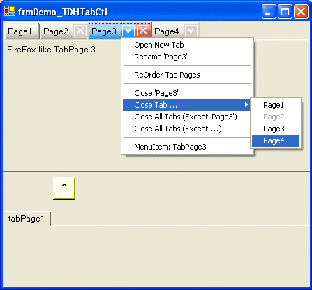
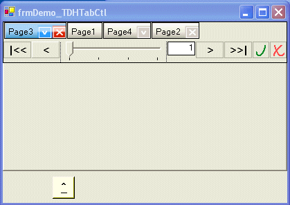

Title: TdhTabCtl - FireFox-like subclassed TabControl and TabPage controls. Author: Troy Hailey Email: ilion7@hotmail.com Environment: VS.NET, Windows Keywords: Control, .NET, C#, Level: Beginner Description: This article describes .NET subclassed TabControl and TabPage controls with FireFox-like tab-buttons and other enhancements. Section Tab Controls SubSection Owner Drawn

A previous article I'd submitted to The CodeProject (TdhEditBox) grew out of the project described in this article: TDHTabCtl, which contains the subclassed controls TdhTabCtl (inheriting from System.Windows.Forms.TabControl) and TdhTabPage (inheriting from System.Windows.Forms.TabPage).
The TDHTabCtl project is based on the interesting subclassed TabControl and TabPage controls originally written by "vijayaprasen" (see: "FireFox-like Tab Control"), and from which I learned quite a bit in studying the code. When I started working on this project, I had intended only to convert "vijayaprasen's" .Net 2.0 code into .Net 1.1 code, and then to make a relatively simple, though important, change (i.e. adding a subclassed TabPageCollection class to the project). In the event, I ended up completely rewriting the original project and adding functionality which differentiates my version from the original.
Some features of the TDHControls.TDHTabCtl.TdhTabCtl and TDHControls.TDHTabCtl.TdhTabPage controls are:
TdhTabCtl - Allow or disallow any TdhTabPage to be closed. This action raises an event.
TdhTabCtl - Require or not confirmation before closing any TdhTabPage
TdhTabCtl - Allow or disallow new TdhTabPages to be opened. This action raises an event.
TdhTabCtl - Allow or disallow any TdhTabPage to be "renamed" (change text on Tab). This action raises an event.
TdhTabCtl - Allow or disallow TdhTabPages to be reordered. This action raises an event.
TdhTabCtl - Allow or disallow right-click ContextMenus on any TdhTabPage tabs/headers
TdhTabPage - Allow or disallow individual TdhTabPage to be closed. This action raises an event.
TdhTabPage - Require or not confirmation before closing individual TdhTabPage.
TdhTabPage - Allow or disallow right-click ContextMenus on individual TdhTabPage.
TdhTabPage - Show on not the Close Button on individual TdhTabPage.
TdhTabPage - Show on not the Menu Button on individual TdhTabPage.
TdhTabPage - Default Menu does not have to be individually assigned to each TdhTabPage;
TdhTabPage - ContextMenu (optionally) assigned to individual TdhTabPage is merged into default Menu when the Menu is displayed for that TdhTabPage.
TdhTabCtl and TdhTabPage controls raise events to notify the client code when these "enhanced" functions (Add, Remove, Rename, Reorder) are performed (for instance, when the user closes a TdhTabPage).
TdhTabPage control may optionally be assigned a unique ContextMenu. In the demo screenshot, we see that "Page3" has been assigned such a unique/individual ContextMenu.
The TDHTabCtl project was written (and compiled) using VS2002 (.NET 1.0) with the intention that the source code be readily available to other developers regardless of the .NET version they are using.
To use the TdhTabCtl and TdhTabPage and classes as is, add a reference in your project to the class library 'TDHTabCtl.dll.'
// The namespace used in the 'TDHTabCtl.dll' library is:
using TDHControls.TDHTabCtl;
// Sample code using the TdhTabCtl and TdhTabPage controls:
private void InitializeComponent()
{
//
// tdhTabCtl1
//
this.tdhTabCtl1.Anchor = ((System.Windows.Forms.AnchorStyles.Top
| System.Windows.Forms.AnchorStyles.Left)
| System.Windows.Forms.AnchorStyles.Right);
this.tdhTabCtl1.Controls.AddRange(
new System.Windows.Forms.Control[]
{
this.tdhTabPage1,
this.tdhTabPage2,
this.tdhTabPage3,
this.tdhTabPage4
});
this.tdhTabCtl1.DrawMode = System.Windows.Forms.TabDrawMode.OwnerDrawFixed;
this.tdhTabCtl1.ItemSize = new System.Drawing.Size(230, 24);
this.tdhTabCtl1.Name = "tdhTabCtl1";
this.tdhTabCtl1.SelectedIndex = 0;
this.tdhTabCtl1.Size = new System.Drawing.Size(800, 216);
this.tdhTabCtl1.TabIndex = 2;
this.tdhTabCtl1.TabStop = false;
// optionally assign EventHandler
this.tdhTabCtl1.OnTabEvents
+= new TDHControls.TDHTabCtl.TabEventsDelegate(this.tdhTabCtl1_OnTabEvents);
// optionally assign EventHandler
this.tdhTabCtl1.OnTabsReordered
+= new TDHControls.TDHTabCtl.TabsReorderedEventDelegate(this.tdhTabCtl1_OnTabsReordered);
}
private void tdhTabCtl1_OnTabEvents(object sender, TDHControls.TDHTabCtl.TabEventArgs e)
{
switch (e.TabEvent)
{
case TDHControls.TDHTabCtl.TabEventArgs.TabEvents.TabAdded:
// optionally do something
break;
case TDHControls.TDHTabCtl.TabEventArgs.TabEvents.TabAddRejected:
// optionally do something
// For instance:
// Add the [TdhTabPage] to the TabPageCollection of a standard TabControl
//this.tabControl1.Controls.Add(e.TabPage);
this.tabControl1.TabPages.Add(e.TabPage);
break;
case TDHControls.TDHTabCtl.TabEventArgs.TabEvents.TabRemoved:
// optionally do something
// For instance:
// Add the [TdhTabPage] to the TabPageCollection of a standard TabControl
//this.tabControl1.Controls.Add(e.TabPage);
this.tabControl1.TabPages.Add(e.TabPage);
break;
case TDHControls.TDHTabCtl.TabEventArgs.TabEvents.TabRenamed:
// optionally do something
break;
case TDHControls.TDHTabCtl.TabEventArgs.TabEvents.TabsReordered:
// This "subevent" is not raised
// if the [tdhTabCtl1.OnTabsReordered] eventhandler is assigned
// It is raised for each TdhTabPage affected by the reorder
// optionally do something
Console.WriteLine("TdhTabPage reordered." // TEST
+" OldInd="+ e.TabIndexOld.ToString() // TEST
+" NewInd="+ e.TabIndexNew.ToString()); // TEST
break;
default:
break;
}
}
private void tdhTabCtl1_OnTabsReordered(object sender, TDHControls.TDHTabCtl.TabsReorderedEventArgs e)
{
// do something
// For instance:
for (int idx = 0; idx < e.TabOrder_int.Length; idx++)
{
Console.WriteLine("TdhTabPage reordered." // TEST
+" OldInd="+ e.TabOrder_int[idx].ToString() // TEST
+" NewInd="+ idx.ToString() ); // TEST
}
}
As the TdhTabCtl and TdhTabPage controls inherit from the standard System.Windows.Forms.TabControl and System.Windows.Forms.TabPage controls, the typical end-user can be expected to understand them without difficulty. The added functionality ought to be self-explanatory.
When enabled, this function, accessed via the built-in context menu of the TdhTabCtl control, allows the end-user to change the .Text value displayed on the tab of the TdhTabPage control(s).
The intention of the functionality for "renaming" the TdhTabPage controls is that user interaction with it be intuitive and easy. Thus, no special user actions nor secondary controls are necessary to dismiss the editbox, whether to accept or reject the rename-action. Rather, the editbox is dismissed by keyboard or mouse behavior.
Specifically:
When enabled, this function is accessed via the built-in context menu of the TdhTabCtl control. The following screenshot shows this function in use:

Reordering the TdhTabPages collection of a TdhTabCtl isn't as straightforward as a simple drag-and-drop operation. On the other hand, the code for this action allows the end-user to preview the end-result and accept or reject the action.
TDHTabCtl.TdhTabCtl control's interface are:
public TDHTabCtl.TdhTabPageCollection TdhTabPages - This property extends the standard .TabPages property; it knows about both the System.Windows.Forms.TabPage and TDHTabCtl.TdhTabPage classes, and provides added methods and properties (for instance, an 'Insert()' method). public new System.Windows.Forms.TabControl.TabPageCollection TabPages - This is the standard .TabPages property for a System.Windows.Forms.TabControl; it knows only about the System.Windows.Forms.TabPage class. TDHTabCtl.TdhTabPage (or inherited). They correspond to certain of the novel properties of the TDHTabCtl.TdhTabPage class. As the standard System.Windows.Forms.TabPage control does have these properties, the TDHTabCtl.TdhTabCtl class uses the set value for any non-TDHTabCtl.TdhTabPage Tab object.
public bool TabsBase_AllowClose - This property indicates whether the Tab object may be removed/closed. public bool TabsBase_ConfirmOnClose - This property indicates whether confirmation is required before removing/closing the Tab object. public bool TabsBase_ContextMenuAllowOpen - This property indicates whether the "Open New Tab (Basic TabPage)" MenuItem of the TDHTabCtl.TdhTabCtl control's built-in context menu is enabled/available. public bool TabsAllowClose - This property indicates whether any Tab object of the TDHTabCtl.TdhTabCtl control's .TabPageCollection may be removed/closed.public bool TabsAllowContextMenu - This property indicates whether the TDHTabCtl.TdhTabCtl control's built-in context menu is to be enabled/available for any Tab object of the control's .TabPageCollection.public bool TabsConfirmOnClose - This property indicates whether confirmation is generally required before removing/closing any Tab object of the TDHTabCtl.TdhTabCtl control's .TabPageCollection.public bool TabsContextMenuAllowClose - This property indicates whether the "Close Tab" MenuItems of the TDHTabCtl.TdhTabCtl control's built-in context menu are to be enabled/available.public bool TabsContextMenuAllowOpen - This property indicates whether the "Open New Tab" MenuItem of the TDHTabCtl.TdhTabCtl control's built-in context menu is to be enabled/available.public bool TabsContextMenuAllowRename - This property indicates whether the "Rename Tab" MenuItem of the TDHTabCtl.TdhTabCtl control's built-in context menu is to be enabled/available.public bool TabsContextMenuAllowReorder - This property indicates whether the "Reorder Tab Pages" MenuItem of the TDHTabCtl.TdhTabCtl control's built-in context menu is to be enabled/available.public bool TabsShowCloseButton - This This property indicates whether the "close button" may be drawn/shown on any TDHTabCtl.TdhTabPage object of the TDHTabCtl.TdhTabCtl control's .TabPageCollection.public bool TabsShowMenuButton - This property indicates whether the "menu button" may be drawn/shown on any TDHTabCtl.TdhTabPage object of the TDHTabCtl.TdhTabCtl control's .TabPageCollection.OnTabEvents EventHandler is attached to the TDHTabCtl.TdhTabCtl control, the event will fire as though the user had manually removed/closed the Tab object.
overridePermission' argument over-rides any .TabsAllowClose or .TabsBase_AllowClose or .TabAllowClose which would normally apply for the given object were the user attempt to manually remove/close the Tab object.
TabPageCollection and removed, or whether the given index values were valid and the objects with those values removed.
public bool TabPages_Remove(bool overridePermission, TDHTabCtl.TdhTabPage theTabPage) - This method removes from the TDHTabCtl.TdhTabCtl control's .TabPageCollection the given TDHTabCtl.TdhTabPage object.public bool TabPages_Remove(bool overridePermission, System.Windows.Forms.TabPage theTabPage) - This method removes from the TDHTabCtl.TdhTabCtl control's .TabPageCollection the given (boxed) System.Windows.Forms.TabPage object.public bool TabPages_RemoveAt(bool overridePermission, int index) - This method removes from the TDHTabCtl.TdhTabCtl control's .TabPageCollection the Tab object with the given index value.public bool TabPages_RemoveRange(bool overridePermission, int indexStart, int indexEnd) - This method removes from the TDHTabCtl.TdhTabCtl control's .TabPageCollection the Tab objects with the given range of index values.TDHTabCtl.TdhTabPage control's interface are:
public bool TabAllowClose - This property indicates whether the specific TDHTabCtl.TdhTabPage control may be removed/closed.public bool TabAllowContextMenu - This property indicates whether the TDHTabCtl.TdhTabCtl control's built-in context menu is to be enabled/available for the the specific TdhTabPage control.public bool TabConfirmOnClose - This property indicates whether confirmation is required before removing/closing the specific TDHTabCtl.TdhTabPage control.public bool TabShowCloseButton - This property indicates whether the "close button" is to be drawn/shown on the specific TDHTabCtl.TdhTabPage control.public bool TabShowMenuButton - This property indicates whether the "menu button" is to be drawn/shown on the specific TDHTabCtl.TdhTabPage control.TDHTabCtl.TdhTabCtl.TdhTabPages property's interface are:
public new TDHTabCtl.TdhTabPage this[int index] - This is the main Indexer for the TDHTabCtl.TdhTabCtl.TdhTabPages property. If the Tab object at the given index in the parent TDHTabCtl.TdhTabCtl control's .TabPageCollection is not an instance of TDHTabCtl.TdhTabPage (or inherited from it), the returned object is a null object -- thus, if one's project allows both TdhTabCtl.TdhTabPages and System.Windows.Forms.TabPages to be added to the TdhTabCtl.TdhTabCtl, it would be better to use next Indexer. Example use: [ this.tdhTabCtl1.TabPages[0].Text = "A TdhTabPage"; ] public System.Windows.Forms.TabPage this[bool alwaysAsBase, int index] - This Indexer returns the Tab object at the given index in the parent TDHTabCtl.TdhTabCtl control's .TabPageCollection (boxed) as a standard System.Windows.Forms.TabPage. The bool value 'alwaysAsBase' is not used in the code; it's there only to differentiate the signature. Example use: [ this.tdhTabCtl1.TabPages[true, 0].Text = "A TdhTabPage"; ] public TDHTabCtl.TdhTabPage this[string text] - This Indexer tries to return the TDHTabCtl.TdhTabPage object in the parent TDHTabCtl.TdhTabCtl control's .TabPageCollection having a .Text value matching 'text;' else it returns a null object.public System.Windows.Forms.TabPage this[bool alwaysAsBase, string text] - This Indexer tries to return the (boxed) System.Windows.Forms.TabPage object in the parent TDHTabCtl.TdhTabCtl control's .TabPageCollection having a .Text value matching 'text;' else it returns a null object.public bool IsTdhTabPage(int index) - This method indicates whether the indexed Tab object in the parent TDHTabCtl.TdhTabCtl control's .TabPageCollection is a TDHTabCtl.TdhTabPage (or inherited from it).public new void Clear() - This method straightforwardly clears the parent TDHTabCtl.TdhTabCtl control's .TabPageCollection.public bool Contains(TDHTabCtl.TdhTabPage theTabPage) - This method indicates whether the parent TDHTabCtl.TdhTabCtl control's .TabPageCollection contains the given TDHTabCtl.TdhTabPage object.public new bool Contains(System.Windows.Forms.TabPage theTabPage) - This method indicates whether the parent TDHTabCtl.TdhTabCtl control's .TabPageCollection contains the given System.Windows.Forms.TabPage object.public void Add(TDHTabCtl.TdhTabPage theTabPage) - This method adds the given TDHTabCtl.TdhTabPage object to the parent TDHTabCtl.TdhTabCtl control's .TabPageCollection.public void Add(System.Windows.Forms.TabPage theTabPage) - This method adds the given System.Windows.Forms.TabPage object to the parent TDHTabCtl.TdhTabCtl control's .TabPageCollection.public void AddRange(params TDHTabCtl.TdhTabPage[] theTabPages) - This method adds the given TDHTabCtl.TdhTabPage object array to the parent TDHTabCtl.TdhTabCtl control's .TabPageCollection.public void AddRange(params System.Windows.Forms.TabPage[] theTabPages) - This method adds the given System.Windows.Forms.TabPage object array to the parent TDHTabCtl.TdhTabCtl control's .TabPageCollection.public void Insert(int index, TDHTabCtl.TdhTabPage theTabPage) - This method inserts the given TDHTabCtl.TdhTabPage object into the parent TDHTabCtl.TdhTabCtl control's .TabPageCollection.
public void Insert(int index, System.Windows.Forms.TabPage theTabPage) - This method inserts the given System.Windows.Forms.TabPage object into the parent TDHTabCtl.TdhTabCtl control's .TabPageCollection.public void InsertRange(int index, params TDHTabCtl.TdhTabPage[] theTabPages) - This method inserts the given TDHTabCtl.TdhTabPage object array into the parent TDHTabCtl.TdhTabCtl control's .TabPageCollection.public void InsertRange(int index, params System.Windows.Forms.TabPage[] theTabPages) - This method inserts the given System.Windows.Forms.TabPage object array into the parent TDHTabCtl.TdhTabCtl control's .TabPageCollection.public bool RemoveRange(int indexStart, int indexEnd) - This method removes the Tab objects of the parent TDHTabCtl.TdhTabCtl control's .TabPageCollection with index values between 'indexStart' and 'indexEnd' inclusive.TdhTabCtl control:
public event TDHControls.TDHTabCtl.TabEventsDelegate OnTabEvents - The OnTabEvents event fires when any of various actions are performed on the TdhTabCtl control's TdhTabPage collection:
TdhTabPage
TdhTabPage
TdhTabPage
TdhTabPage
TdhTabPage collection
OnTabsReordered EventHandler has been assigned for the TdhTabCtl control, the OnTabEvents event does not fire for this action; otherwise, it fires individually for each TdhTabPage affected.)
TabEventArgs argument supply specific information about the event, including a reference to the affected TdhTabPage instance.
public delegate void TabEventsDelegate(object sender, TDHControls.TDHTabCtl.TabEventArgs e) - This event delegate defines the signature of the OnTabEvents EventHandler.
public event TDHControls.TDHTabCtl.TabsReorderedEventDelegate OnTabsReordered - The OnTabsReordered event fires when the TdhTabCtl control's TdhTabPage collection is reordered. Among the properties of the TabsReorderedEventArgs argument is an ArrayList of integer values (also accessible as an integer array) which may be used to determine the new taborder as compared to the old.
public delegate void TabsReorderedEventDelegate(object sender, TDHControls.TDHTabCtl.TabsReorderedEventArgs e) - This event delegate defines the signature of the OnTabsReordered EventHandler.
TdhTabCtl ver 1.0.004 to The Code Project.
TdhTabCtl ver 1.0.005:
TdhTabPage was removed/closed via the ContextMenu,
its TabRect was drawn being drawn again after the removal.
TdhTabCtl ver 1.0.010 - 1.0.012:
TdhTabCtl control to contain and handle both
TdhTabPage and .Forms.TabPage controls.
TdhTabCtl.TabPages property
(i.e. the accessor for the
TDHControls.TDHTabCtl.TdhTabPageCollection
class instance) to TdhTabCtl.TdhTabPages.
.TabControl.TabPages property for the
TdhTabCtl instance returns base.TabPages.
TDHControls.TDHTabCtl.TdhTabCtl:
public bool TabsBase_AllowClose
public bool TabsBase_ConfirmOnClose
public bool TabsBase_ContextMenuAllowOpen
TabPages_Remove(bool overridePermission, TDHTabCtl.TdhTabPage theTabPage)
TabPages_Remove(bool overridePermission, System.Windows.Forms.TabPage theTabPage)
public bool TabPages_RemoveAt(bool overridePermission, int index)
public bool TabPages_RemoveRange(bool overridePermission, int indexStart, int indexEnd)
TDHControls.TDHTabCtl.TdhTabPageCollection
(class instance is accessed via the TdhTabCtl.TdhTabPages
property):
public System.Windows.Forms.TabPage this[bool alwaysAsBase, int index] - The bool value 'alwaysAsBase' is not used in the code; it's there only to differentiate the signature.
public TDHTabCtl.TdhTabPage this[string text]
public System.Windows.Forms.TabPage this[bool alwaysAsBase, string text]
public bool IsTdhTabPage(int index)
public new bool Contains(System.Windows.Forms.TabPage theTabPage)
public new void Add(System.Windows.Forms.TabPage theTabPage)
public new void AddRange(params System.Windows.Forms.TabPage[] theTabPages)
public void Insert(int index, System.Windows.Forms.TabPage theTabPage)
public void InsertRange(int index, params System.Windows.Forms.TabPage[] theTabPages)
public bool RemoveRange(int indexStart, int indexEnd)
TdhTabCtl ver 1.0.021 - 1.0.021:
ContextMenu for the TDHTabCtl.TdhTabCtl class was unaware of the TDHTabCtl.TdhTabPage class (thus, the "Add Tab" MenuItem added standard System.Windows.Forms.TabPage controls). These changes don't modify the interface of the TDHTabCtl.TdhTabCtl class.
TdhTabCtl ver 1.0.021 to The Code Project.